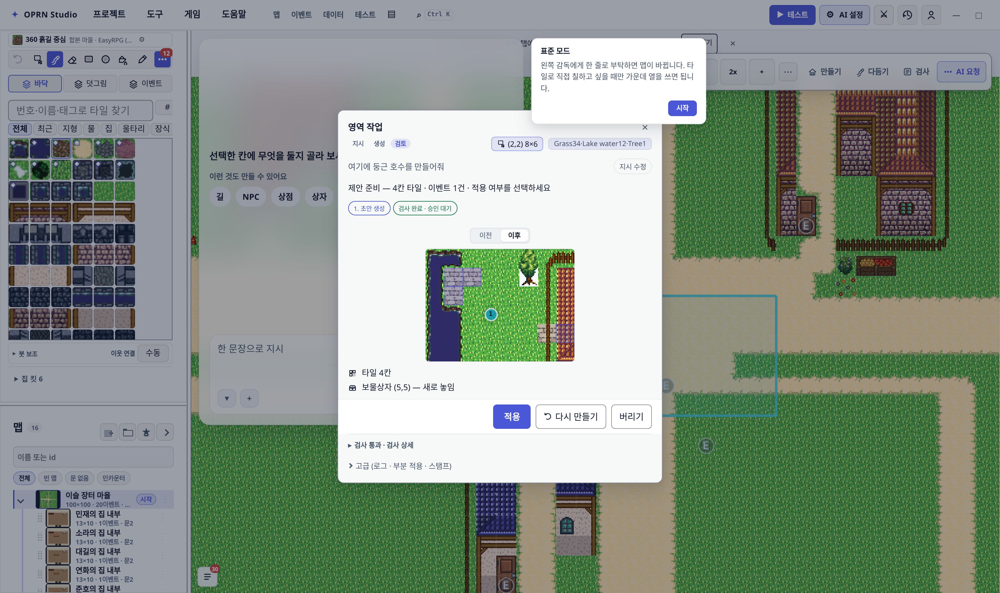
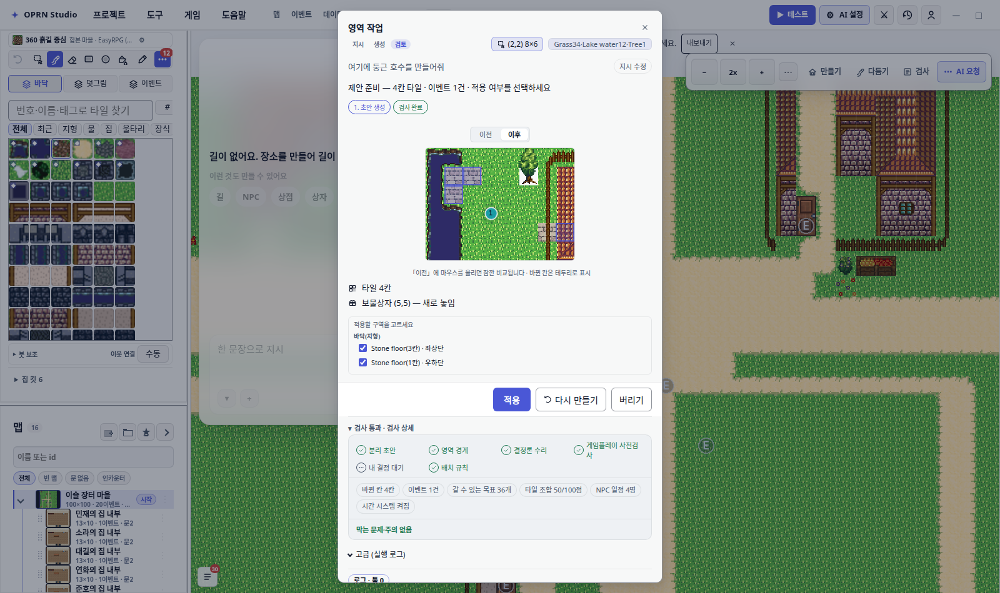
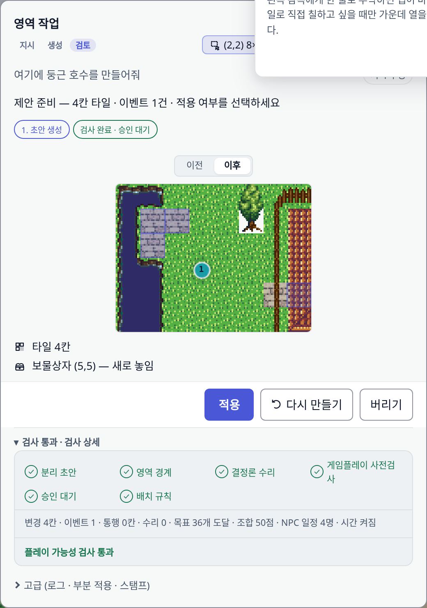
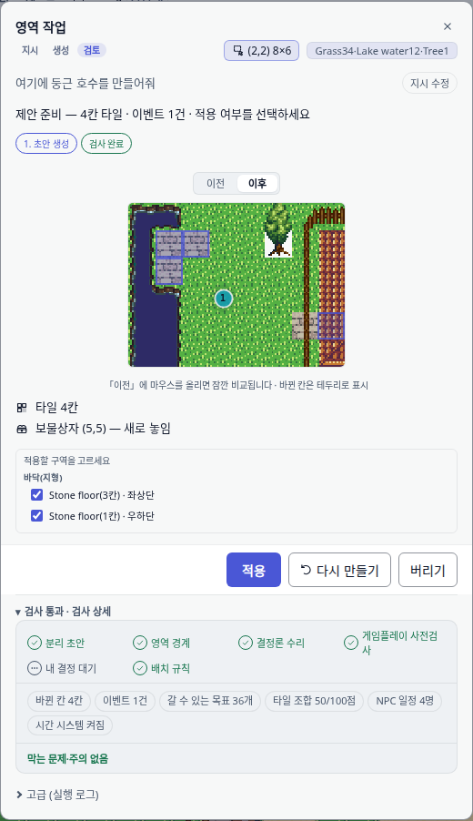
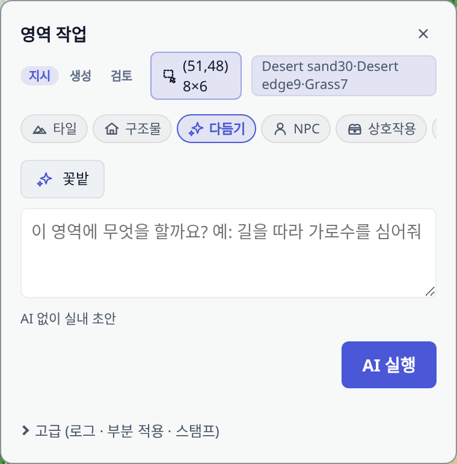
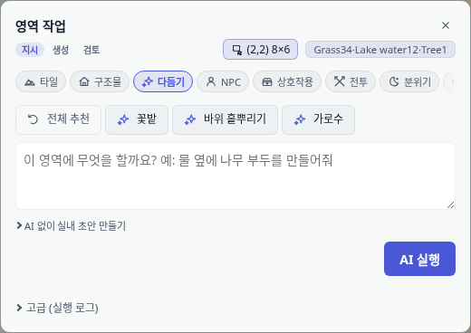
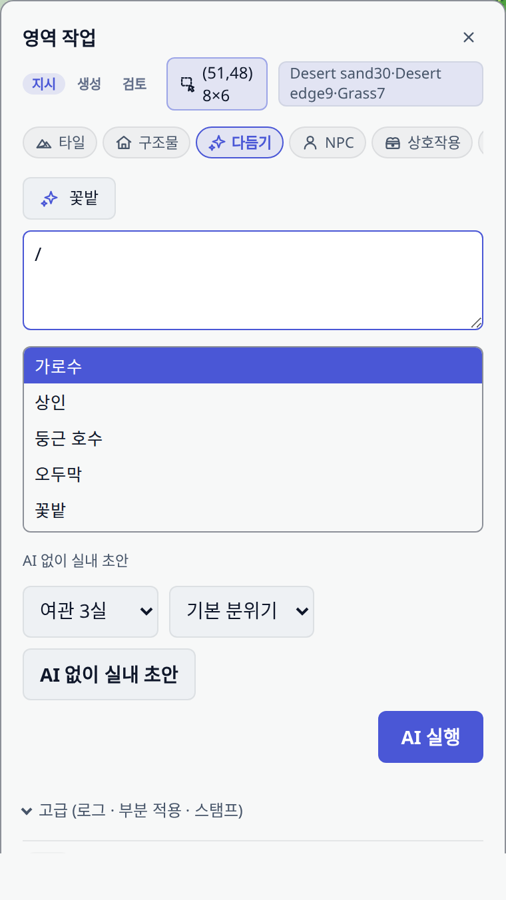
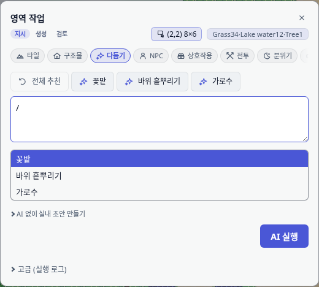
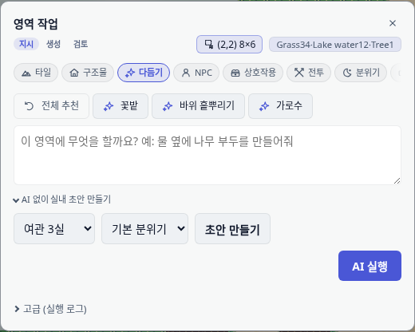
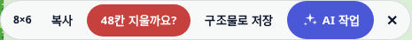

스크린샷 13장을 훑어 화면에서 읽히는 대로 결함을 적고, 제품 결함을 전부 고쳤다.
표준 모드 안내 카드가 영역 작업 창 위에 떠서, 좌표 칩과 "적용 여부를 선택하세요" 줄을 덮었다.


src/editor/coachMarks.ts, src/editor/panels/regionTaskModal.ts부분 적용(구역 고르기)이 「고급」 안에 묻혀 있었고, 지표는 단위 없는 한 줄 문장이었다.


src/editor/panels/regionTaskModal.ts, src/editor/regionTask/harnessReview.ts, src/styles/editor/region-task.css「다듬기」를 누르면 추천이 4개에서 1개로 줄고, 전체 목록으로 돌아갈 표시가 없었다.


src/editor/regionTask/suggestedCommands.ts, src/editor/regionTask/regionContextSuggestions.ts/ 목록이 켠 카테고리를 무시했고, "AI 없이 실내 초안"이 한 화면에 세 번 나왔다.


src/editor/panels/regionTaskModal.ts

src/editor/selectionActionChips.ts, src/styles/editor/inline-assist.css화면에서 읽힌 순서대로. 우선순위는 "작업을 막는가"를 기준으로 매겼다.
| # | 등급 | 무엇이 잘못 보였나 | 어떻게 고쳤나 |
|---|---|---|---|
| 1 | P1 | 표준 모드 웰컴 카드가 영역 작업 창 본문을 덮음 | 모달·팝오버가 있으면 코치마크가 물러남. 본 것으로 기록하지 않음 |
| 2 | P1 | "AI 없이 실내 초안"이 라벨·제목·버튼 3곳 중복 | 제목만 남기고 버튼은 "초안 만들기" |
| 3 | P1 | 검토 상태가 4곳에서 같은 말 반복 | 진행 칩 "검사 완료", 문제 줄 "막는 문제·주의 없음" |
| 4 | P1 | 부분 적용(구역 고르기)이 접힌 「고급」에 묻힘 | 검토 본문으로 올림. 「고급」은 실행 로그만 |
| 5 | P2 | 카테고리를 고르면 추천 4→1개, 되돌아갈 표시 없음 | 「전체 추천」 칩 + 명령 4개 보강 |
| 6 | P2 | / 자동완성이 켠 카테고리를 무시 | 카테고리 안에서만 검색 |
| 7 | P2 | "승인 대기"에 초록 체크 → 끝난 것처럼 보임 | status: "pending" 추가, "내 결정 대기" |
| 8 | P2 | 지표가 단위 없는 한 줄 문장 | 단위·분모 붙은 칩, 나쁜 값은 경고색 |
| 9 | P2 | 선택 칩 바의 AI 버튼이 라벨 없는 아이콘 | "AI 작업" 라벨 |
| 10 | P2 | 넓은 영역 지우기가 오클릭 한 번에 실행 | 12칸 초과는 "N칸 지울까요?" 확인(4초 자동 해제) |
| 11 | P2 | 전/후 비교가 작은 썸네일 두 장 | 「이전」에 올리면 잠깐 비교, 바뀐 칸 테두리 굵게, 안내 한 줄 |
| 12 | P2 | 지시 입력이 모달·왼쪽 패널 두 곳에 동시 존재 | 모달이 열리면 왼쪽 조수 입력이 물러남 |
| 13 | P3 | 안내 문구의 "왼쪽 감독"이 화면에 없는 이름 | "왼쪽 조수 패널" |
| 14 | P3 | 문맥 전용 추천이 카테고리에서 사라짐 | 카테고리 필터에 문맥 명령 포함 |
| 15 | — | 실행 로그에 mock 표시 | 제품 결함 아님 — 아래 참고 |
mock은 캡처 도구가 남긴 값이다
src/editor/editorToolHook.ts의 runMockRegionTask는 DEV 빌드에서만 붙는 e2e 하네스다.
캡처가 실제 LLM 없이 창을 검토 단계까지 몰려면 이 경로를 쓸 수밖에 없고, 사용자 빌드에는 없다.
화면에 이상하게 보였지만 제품 코드에 문제가 없어 손대지 않았다.
고친 것마다 회귀 테스트를 붙였다. 되돌아가면 테스트에서 잡힌다.
| 무엇 | 결과 | 내용 |
|---|---|---|
test/regionTaskUiAudit.test.ts | 8 통과 | 신규. 결함 1·2·3·4·7·8·11·12 각각을 지킨다 |
coachMarks · selectionActionChips · suggestedCommands · regionTaskModal · regionTaskCssTokens | 합계 57 통과 | 기존 스펙 포함, 실패 0 |
test/e2e/_region-task-ui-audit-shots.spec.ts | 3 통과 | 수정 후 화면 11장 캡처(이 보고서의 "후" 이미지) |
| 전체 스위트 | 기준선 빨강 | 이 저장소는 손대기 전부터 85개 파일이 실패한다. 내 diff 와 이름이 겹치는 6개 파일은 HEAD 만 체크아웃한 별도 워크트리에서 같은 테스트가 같은 이유로 실패함을 확인했다 — 이번 변경 탓이 아니다 |
합성 마우스 드래그로 선택 영역을 만드는 경로는 기준선에서 이미 깨져 있다. 기존
test/e2e/canvas-fill-selection-chips.spec.ts도 같은 자리(selection 폴링)에서 실패한다.
칩 바 캡처는 하네스 setSelection으로 우회했고, 드래그 자체는 이번 감사 범위 밖이라 손대지 않았다.